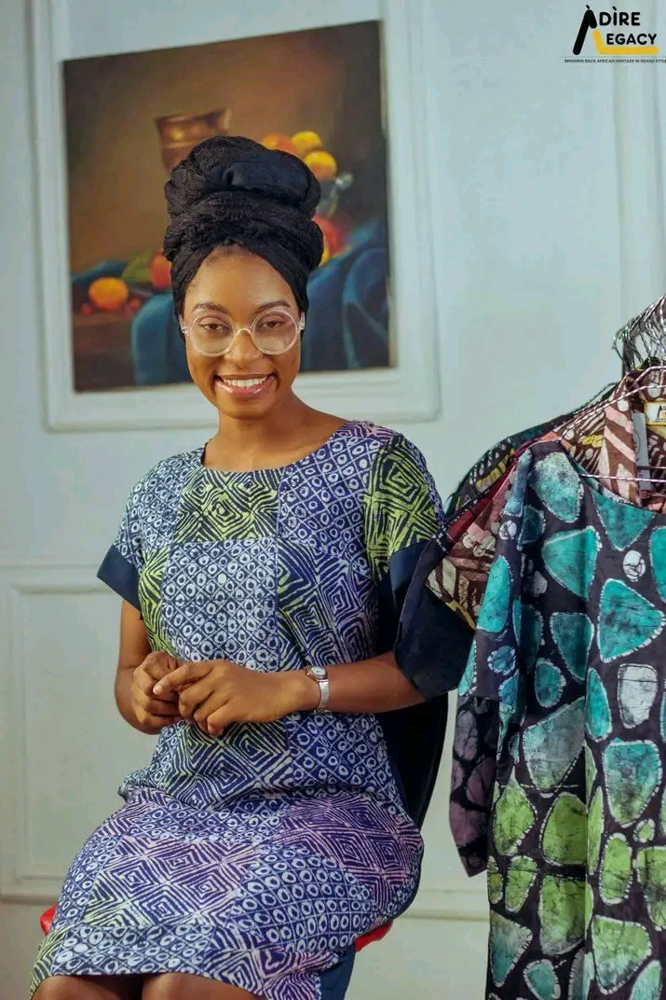

Your Kindness
Your kindness is a beautiful reminder that even the smallest gestures can brighten someone's day and remain in their memory.
A LITTLE SURPRISE MADE WITH LOVE
I made a little corner of the world just for you.
Are you ready to open it? 💗
A SMALL TRIBUTE TO SOMEONE EXTRAORDINARY
Dear Miss Bam, this little website is a reminder that your kindness matters, your guidance is appreciated, and the beautiful difference you make in people's lives does not go unnoticed.
Read My Letter ♡A FEW WORDS FROM MY HEART
Not everyone gets to meet someone whose encouragement makes the journey a little easier. I am grateful that I got to know you.
Your kindness is a beautiful reminder that even the smallest gestures can brighten someone's day and remain in their memory.
Thank you for sharing your knowledge, giving direction, and helping others grow. The lessons you teach reach beyond books and classrooms.
Your patience, warmth, and encouragement make you someone worth celebrating. I hope life gives you the same kindness you give to others.
LITTLE PIECES OF A BEAUTIFUL STORY
Every picture holds a moment, and every moment is another reason to appreciate you.

A MOMENT TO TREASURE
Some moments deserve to be kept close and remembered with a smile.
A LETTER FROM THE HEART
Sometimes, words feel too small for the gratitude the heart carries. That is how I feel whenever I try to explain how much your kindness and guidance mean to me.
You have been more than an instructor. You have been a source of encouragement, a beautiful example of patience, and a reminder that one person's kindness can make another person's journey brighter.
Perhaps you may never fully realise how much the little things you do matter. Your words, your support, your willingness to teach, and the warmth you bring into a room can leave a lasting mark on someone's heart. You have certainly left one on mine.
If I could give you one gift, it would be the ability to see yourself through the eyes of the people you inspire. You would see someone precious, appreciated, admired, and worthy of every beautiful thing life has to offer.
Thank you for being a beautiful part of my journey, Miss Bam. May life return your kindness to you in countless ways. May your days be filled with peace, laughter, answered prayers, and the kind of happiness that reaches deep into your heart.
No matter how far life takes me, I will always be grateful that I had the opportunity to learn from you and know you. You hold a special place in my heart, and that appreciation is something I will always carry.
With all my love, respect, and heartfelt appreciation,
For my wonderful Miss Bam. 💗
BEFORE YOU GO...
I hope you never forget that you are appreciated more than words can explain. The goodness you share with others is meaningful, and the lessons you teach can live in people's hearts for years.
May your future be filled with beautiful opportunities, genuine happiness, peace of mind, good health, and people who celebrate you as wholeheartedly as you deserve.